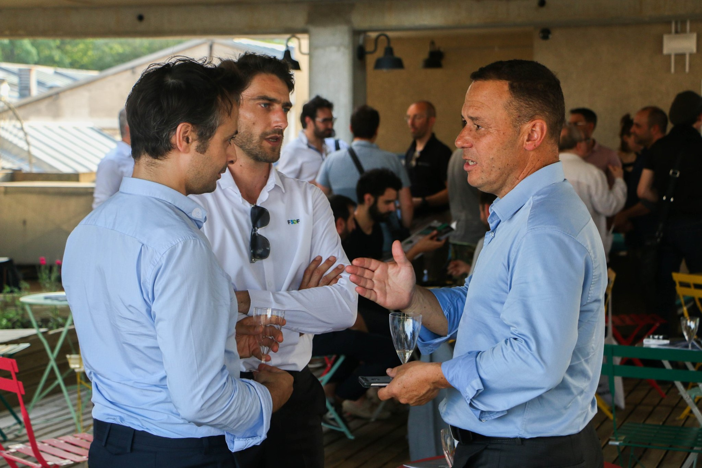
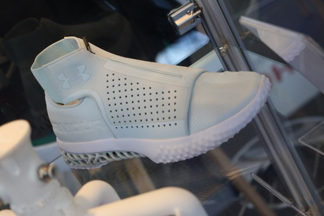
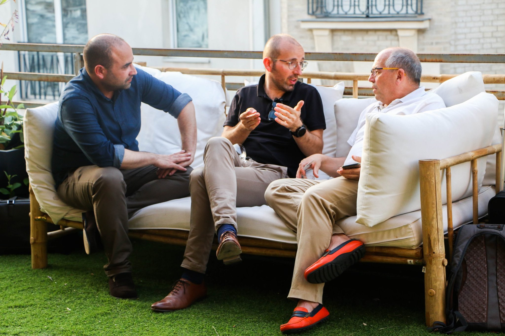
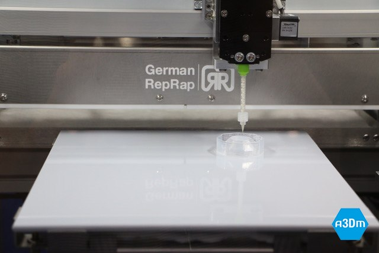
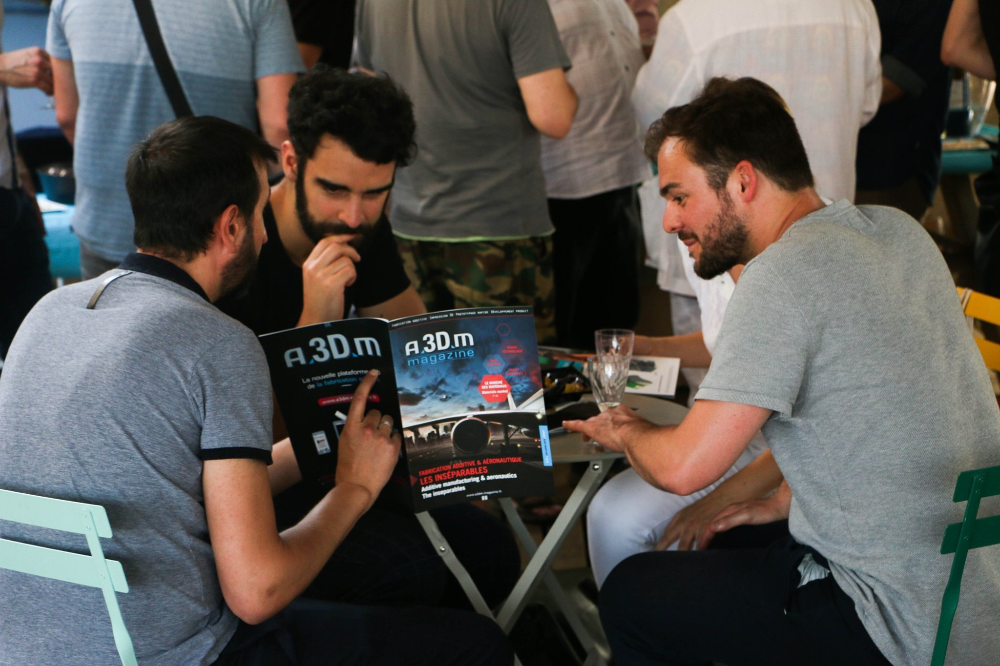

PHOTOS/VIDÉOS : DÉCOUVREZ LES PROJETS RÉALISÉS LORS DE MES 5 MOIS DE STAGE
Publié le Jeudi, 15 aout 2019 par Kevin Crespin

Au cours des 5 mois de stage j’ai du réaliser de nombreux projets. Tournages et montages vidéos lors des salons professionnels sur l’impression 3D. Prise de vue lors des salons et soirées « Afterwork » organisée par A3DM Magazine. Et pour finir, un petit aperçu des publications Facebook, Twitter et Linkedin. Voici une sélection de ces différents projets :
VIDEOS Salon 3D Print 2019 : Rencontre avec les professionnels de l'impression 3D (Partie 1 et 2)

PHOTOS prises lors des salons professionnels ou des soirées organisées par A3DM Magazine





COMMUNICATION